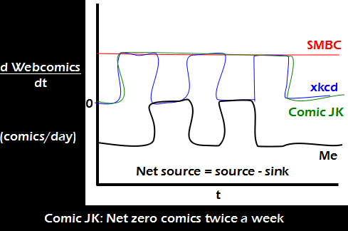

Comic JK 790
When I Feel Like It
⇤
<
?
>
⇥

⇤
<
?
>
⇥
Forum
.
RSS
.
Digg
.
Facebook
.
Reddit
.
Twitter
.
Stumbleupon
Enter your thoughts on number 790 here. Please, no spamming, trolling, phreaking, or using current copyright law to make a point. Joke explained here: he's pointing out that he reads SMBC and xkcd, and writes ComicJK. Twice a week, he releases as many comics as he reads. The rest of the time, he reads more than he releases. I... don't get it. >Something to do with when new comics come out I think... :S The t is in days, xkcd has three peaks, while ComicJK is smooth for 5/7 of the graph. >The question is...what does Me stand for? And how is it unproducing a webcomic daily excepting tuesdays and thursdays? >>Alt-text assumption: reading an electronic copy destroys it. >>It's clearly looking at his output vs input and he takes Tuesday and Thursday off. For us we get five comics but for him he "loses" five comics (and on different days to when they are actually published) >>>1 1 1 = -1, 1 0 1 = 0, 1 0 0 = -1. the 0 becomes hi and -1 is lo. Needs a DC offset. No DC offset, black = ComicJK - xkcd - SMBC. So assuming that he destroys the other comics by reading them, he reduces the number of comics by one at five days per week. MS Paint Adventures is always either off the top of the graph or off the bottom. d YourMother/d MyDick = infinity >Too much time in the pool?